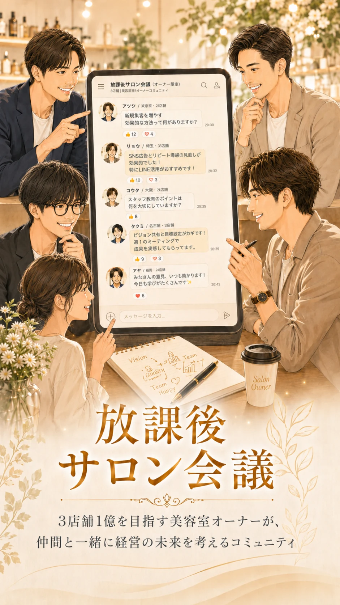
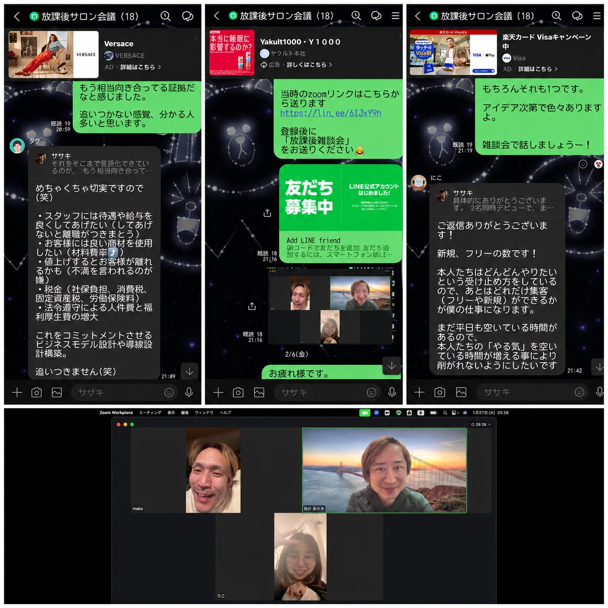
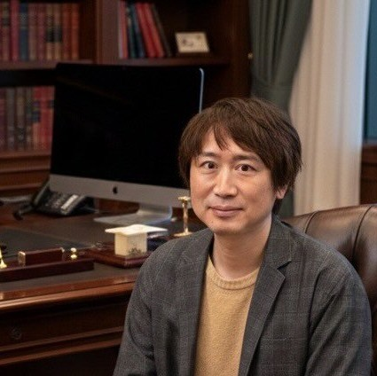
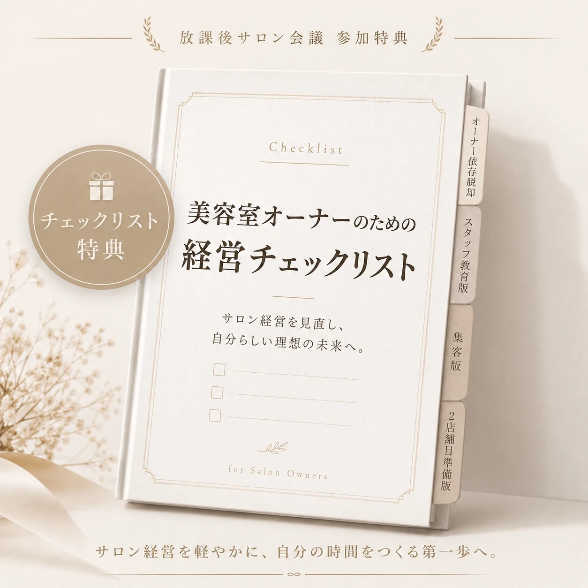

経営者としての孤独が軽くなる。

Empathy
こんな悩み、ひとりで抱えていませんか？
スタッフを雇ったのに、結局いちばん働いているのは自分。
スタッフの売上が上がらない。
採用や教育の悩みを相談できる相手がいない。
集客、単価アップ、店販、2店舗目のことを誰かに聞きたい。
セミナーや経営塾は少し堅くて疲れる。
同じ美容室オーナーのリアルな話が聞きたい。
Community
放課後サロン会議とは？
「放課後サロン会議」は、美容室オーナーが売上・採用・教育・集客・人生を本音で語れる、オーナー限定のオープンチャットです。
堅い経営塾ではなく、営業後にふらっと立ち寄れる放課後のような場所。
競争より共感。
正論より実感。
見栄より本音。
「それ、うちもあります」
「みんなどうしてますか？」
「それなら、こうしてみたら？」
そんな会話が生まれる場所を目指しています。

Host
主催者紹介

悩める美容室経営者さんの相談役
佐々木 祐介
LAFONTE / URURIEグループ5店舗、法人3社経営。
1店舗から店舗展開したいあなたへ。
- 単価アップ
- リピート率
- スタッフ育成
この3つを、現場で回る仕組みにしていくための相談役です。
Benefits
放課後サロン会議で得られること
スタッフ教育や採用のヒントが得られる。
集客や単価アップのリアルな事例に触れられる。
他店のオーナーの考え方を知れる。
セミナーでは聞きづらい小さな悩みも相談できる。
Bonus
参加者限定特典つき

- 美容室オーナーのための経営チェックリスト
- 月商２０万円から月商１０００万円までにやることチェックリスト
- 月一回経営アクションプランシート
ただ話せるだけでなく、明日からの経営に使えるヒントも受け取れます。
For You
こんな美容室オーナーにおすすめです
1店舗〜2店舗規模の美容室オーナー。
プレイヤー兼経営者として現場に立っている方。
スタッフ育成や採用に悩んでいる方。
2店舗目に進みたいけれど不安がある方。
ガチガチの経営コミュニティより、気軽に話せる場がほしい方。
How To Join
参加は無料です
- Step 01
ボタンからオープンチャットに参加
- Step 02
まずは他のオーナーの投稿を見る
- Step 03
気になるテーマがあれば反応する
- Step 04
相談したいことがあれば投稿する
After School
ひとりで抱えない美容室経営へ。
昼は経営者として、スタッフやお客様の前に立つ。
でも夜くらいは、同じ立場の仲間と本音で話してもいい。
売上も、採用も、教育も、集客も、人生も。
美容室オーナーが肩書きを少し下ろして話せる場所。
それが、放課後サロン会議です。
無料で放課後に参加する